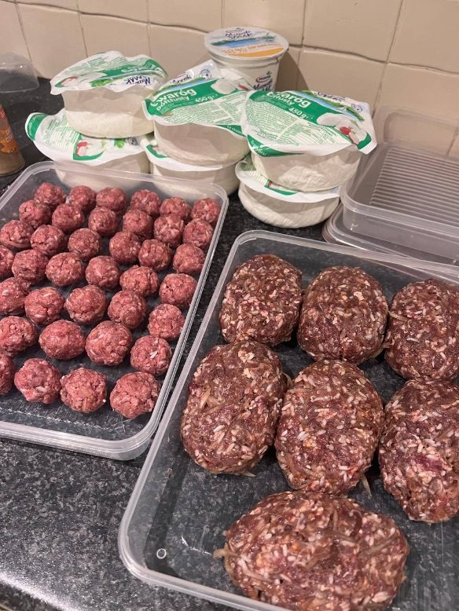
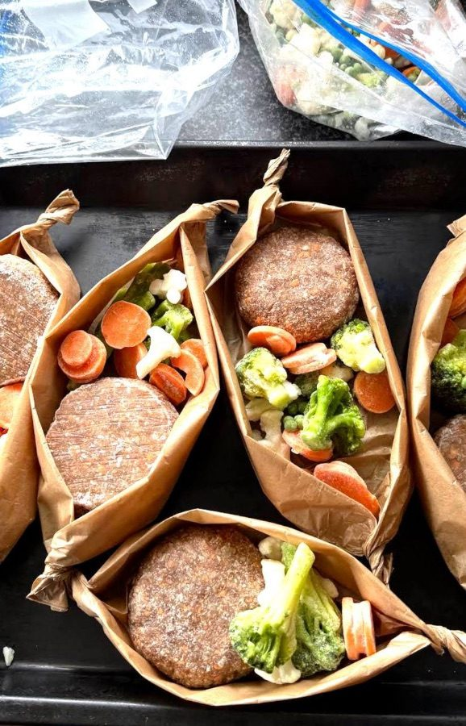
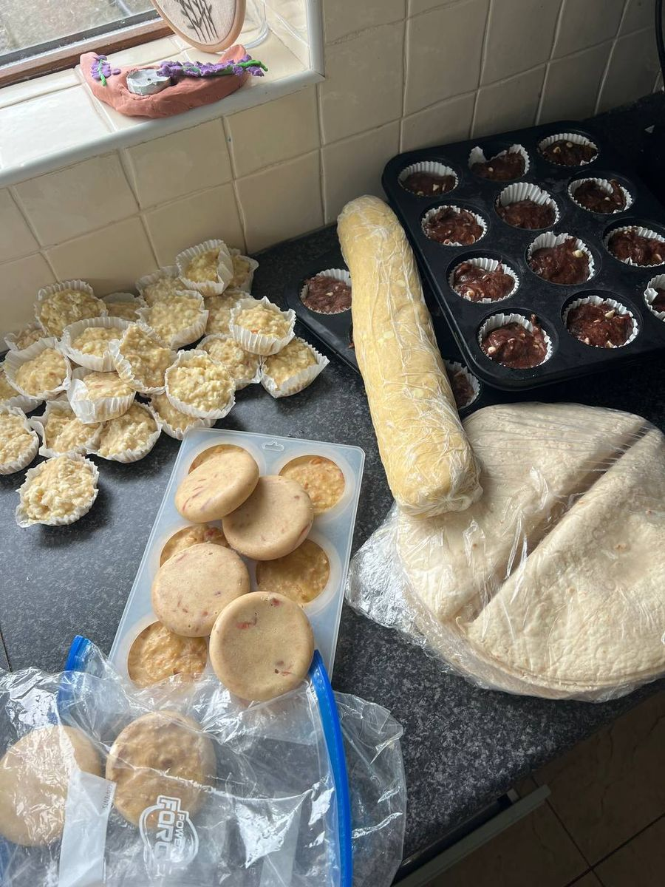
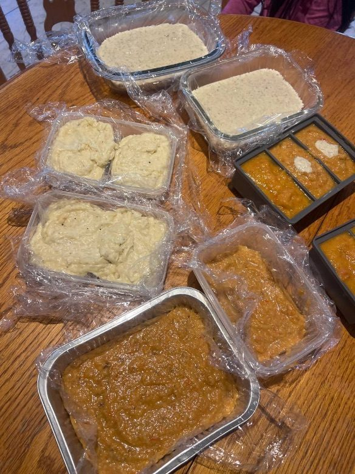

8 видов мясных заготовок
За 1 час переработаем ~5 кг куриного филе и 2 кг фарша. Хватит примерно на 12 полноценных вторых блюд.
За 1 час — 8 видов мясных заготовок, основа для завтраков и любимые домашние соусы. Ужины закрыты почти на две недели.

Что нужно отменить все дела, закрыться на кухне с утра до вечера, приготовить десятки блюд, а потом ещё всё правильно упаковать и разложить. Именно поэтому многие сёстры так и не начинают — или пробуют один раз, устают и больше не возвращаются.
А ведь даже если вы вообще не делаете заготовки, время всё равно уходит — по чуть-чуть каждый день: снова достать продукты, снова почистить лук, снова натереть морковь, снова разделать мясо, снова готовить.
Оценка примерная: практикум превращает готовку «с нуля» каждый вечер в час заготовок и короткий разогрев. Подвигайте ползунки — под ваш ритм.

За 1 час переработаем ~5 кг куриного филе и 2 кг фарша. Хватит примерно на 12 полноценных вторых блюд.

Одна универсальная основа — а из неё оладьи, вафли, кексы и другие удобные завтраки для семьи.

К мясу, рыбе и овощам. Даже привычные блюда каждый раз раскрываются по-новому.
Как готовить действительно быстро, как правильно хранить и размораживать, как из одних продуктов получать разные блюда — и какие популярные советы работают только на видео.
Всю подробную информацию о практикуме можно узнать в Telegram.
Хочу на практикум @Hadi_UmmIlyas